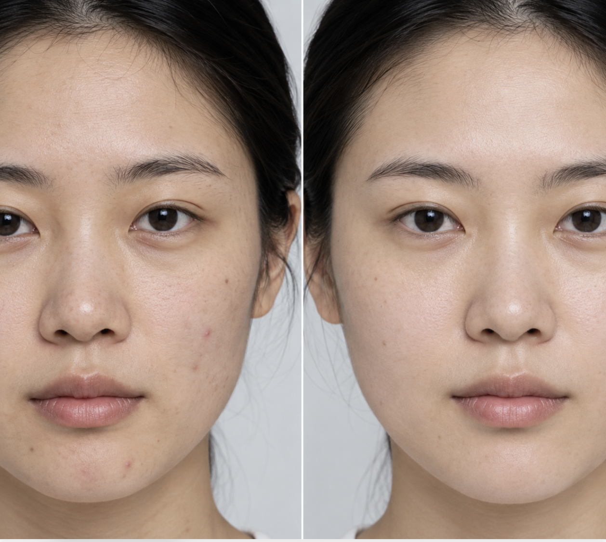

TRUST IS MADE OF MANY SMALL SIGNALS / 2026.05.10
一张对比图，
四种可信度。
这篇「7 天逆袭」笔记不是单一维度的真假题。图片里的纹理、评论里的节奏、账号的发布习惯与文案中的断言，共同织出一张可读的信任纹理。
DEMO SAMPLE综合可信度
36 / 100
高风险 · 评论区异常最集中
建议降权并转人工复核
EVIDENCE FIELD · 04 FRAGMENTS / 09 SIGNALS

R / BEFORE — AFTERU / 0228
评论区是最集中的异常场。
37 个账号在 11 分钟内使用高度相似的句式，评论聚类向同一时间窗口收拢。
T / ACCOUNT账号可信度 46
R / IMAGE图片真实性 42
U / COMMENT评论区真实性 28
S / LANGUAGE文案真实性 38
演示数据不构成对真实人物、品牌或平台的指控。AI 只解释信号，不替代人工复核。
TRULENS / CONTENT TRUST PORTRAIT · 虚构样本 · 四维交叉核验 · 2026.05.10